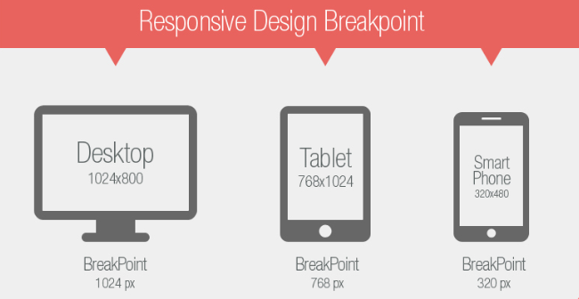

Diseño responsive
El diseño web responsive es una técnica de diseño web que busca la correcta visualización de una misma página en distintos dispositivos. Desde ordenadores de escritorio a tablets y móviles.
Se trata de redimensionar y colocar los elementos de la web de forma que se adapten al ancho de cada dispositivo permitiendo una correcta visualización y una mejor experiencia de usuario. Se caracteriza porque los layouts (contenidos) e imágenes son fluidos y se usa código media-queries de CSS3.
Media queries
Las media queries permiten a las páginas web utilizar diferentes declaraciones de estilo de la hoja de estilos en base al ancho de la pantalla del dispositivo en el que se visualiza el sitio web. En los diseños web responsive, una media query es una declaración CSS que se utiliza como parámetro para saber cuándo utilizar otra declaración de estilo en base a las dimensiones del dispositivo en donde se visualiza la página web.
